Questão 1 · Diagnóstico dif erencial de dor torácica na emergência · Exames de imagem · 4000185428Aneurisma de Aorta Torácica Mulher de 67 anos comparece ao pronto atendimento devido a dor torácica com irradiação para o dorso. Refere quadro semelhante por 3 ocasiões nos últimos 3 meses, sem história de trauma prévio. A dor é de forte intensidade e sem fatores de melhora ou piora. Hipertensa, tabagista 40 maços/ano. Na sua primeira avaliação, solicitou- -se uma radiogra a de tórax (imagem demonstrada). Em relação ao quadro clínico e à imagem, pode-se afirmar que
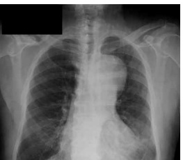
A há presença de alargamento de mediastino, podendo sugerir aneurisma de aorta torácica.
B a radiografia foi bem realizada, com boa inspiração e boa penetração e sem rotação.
C o índice cardiotorácico medido foi de 0,4, sugerindo cardiomegalia importante.
D na avaliação do ar presente na traqueia, podemos afirmar que há desvio dessa estrutura.
E há forte indício de hemotórax à esquerda.
Questão 2 · Dissecção aórtica aguda · Manif estações clínicas e complicações · 4000191079A presença, em um paciente, de dor torácica e/ou dorsal súbita e lancinante, acompanhada de hipotensão arterial e hipoperfusão periférica distal com deficit de pulsos distais devem levar à suspeita diagnóstica de
A hemotórax.
B dissecção aórtica.
C trombose de veia cava.
D ruptura de valva mitral.
E choque neurogênico.
Questão 3 · Tratamento da dissecção aórtica tipo A · Cardiologia · 4000164376Paciente sexo masculino, 54 anos, hipertenso, tabagista importante, deu entrada no pronto-socorro com quadro de dor torácica intensa, associada a sudorese que começou há cerca de 3 horas. À avaliação, a PA: 160 × 100 mmHg, FC: 80 bpm, SatO2: 98% em ar ambiente, FR: 16 ipm, pulsos assimétricos. Realizou eletrocardiograma e radiogra a de tórax que seguem abaixo. Entre as condutas abaixo, a melhor para este paciente é:


A a trombólise química.
B controle da pressão e da frequência cardíaca.
C a angioplastia.
D heparina de baixo peso molecular.
Questão 4 · Tratamento · Tratamento geral da crise hipertensiva · Cardiologia · 4000147014Paciente masculino, 70 anos, hipertenso, diabético e obeso, dá entrada no pronto atendimento com quadro de dor torácica de início súbito há cerca de 2 horas, de forte intensidade, com irradiação para região dorsal. Na admissão, está com PA:200/110, FC:95bpm, FR:16ipm, SO2:95%, com ausculta cardíaca mostrando sopro aórtico sistólico +++/IV, pulsos periféricos assimétricos, nos e palidez cutânea com pele fria. Foi realizada tomogra a da aorta com contraste com diagnóstico de dissecção aguda de aorta. Sobre esse quadro, assinale a alternativa correta.
A O controle da dor do paciente deve ser feito com anti-inflamatório não esteroidal, como dipirona.
B O uso definitroprussiato de sódio deve ser iniciado imediatamente para controle pressórico em monoterapia.
C Deve-se iniciar anticoagulação do paciente.
D Deve-se ter como alvo o betabloqueio efetivo do paciente, com a FC oscilando entre 60 e 75.
E O tratamento inicial deve ser com administração de betabloqueadores por via endovenosa, visando diminuir a frequência cardíaca e a pressão arterial.
Questão 5 · Manif estações clínicas e complicações · Def inição e classif icação · 4000142150Um paciente de 65 anos de idade, com dor torácica súbita em facada, irradiada para as costas, sudorese, e com eletrocardiograma normal, foi submetido a exame físico, no qual se verificou que havia assimetria de pulsos. Qual o provável diagnóstico?
A Pericardite
B Infarto do miocárdio sem supra
C Dissecção aórtica
D Espasmo esofagiano
E Cólica biliar
Questão 6 · Dissecção aórtica aguda · 4000138110As classificações de DeBakey e Stanford definem as dissecções aórticas com base na extensão anatômica. Sobre estas classificações, assinale a opção correta.
A Tipo | de DeBakey são limitadas à aorta ascendente.
B Tipo II de DeBakey envolvem a aorta ascendente e toracoabdominal.
C Tipo IIIa de DeBakey envolvem a aorta torácica descendente e aorta abdominal.
D Tipo IIIb de DeBakey são restritas à aorta torácica descendente.
E Tipo I e tipo II de DeBakey correspondem ao tipo A de Stanford.
Questão 7 · Dissecção aórtica aguda · 4000129922Um haltero lista de 40 anos procura atendimento de emergência com quadro de dor torácica de forte intensidade, irradiada para lombar e abdome. Ao exame, apresentava-se com temperatura de 36,6oC; FC de 105 bpm e FR de 20 rpm; aparelho respiratório murmúrio vesicular uniformemente distribuído, sem ruídos adventícios; abdome depressível, doloroso a palpação difusa profunda, ruídos hidroaéreos presentes. De história pregressa, é hipertenso, com controle irregular. Referiu ainda o uso de substâncias ilícitas (cocaína). Sobre o caso acima, assinale a assertiva que contenha a principal hipótese diagnóstica e o exame complementar mais adequado para investigação?
A Pielonefrite aguda / Ultrassom abdominal.
B Calculose renoureteral / Ultrassom abdominal.
C Angina mesentérica / Angiotomografia torácica.
D Dissecção de aorta / Tomografia computadorizada.
E Doença ulcerosa péptica / Endoscopia Digestiva Alta.
Questão 8 · Manif estações clínicas e complicações · Sopros diastólicos · 4000114054Paciente de 50 anos, hipertenso, é admitido na emergência com dor torácica de forte intensidade, irradiada para a região interescapular, contínua e de início súbito. Apresentase agitado, com sudorese fria, PA: 180/100 mmHg, sopro diastólico em foco aórtico com irradiação para o bordo esternal direito e com sinais de insuficiência cardíaca. Esses sinais e sintomas estão relacionados à
A Estenose aórtica com ruptura de músculo papilar.
B Dissecção aórtica tipo III de DeBakey.
C Insuficiência mitral pós infarto agudo do miocárdio.
D Dissecção da aorta ascendente com insuficiência aórtica aguda.
Questão 9 · Tratamento · Exames de imagem · Cardiologia · 4000107512Considere um paciente de 40 anos, com diagnóstico de Síndrome de Marfan que chega ao pronto-socorro com história de dor torácica aguda acompanhada de alargamento de mediastino visualizado em Rx de tórax, sugerindo dissecção aórtica. Assinale a alternativa correta.
A Havendo dissecção envolvendo a aorta ascendente, o tratamento deve ser inicialmente conservador e a cirurgia postergada até melhora das condições clínicas do paciente.
B A angiorressonância nuclear magnética é superior a angiotomografia e deve ser o exame de escolha na fase aguda da dissecção se o paciente evoluir com instabilidade hemodinâmica.
C No caso de o paciente evoluir com instabilidade hemodinâmica, o ecocardiograma transesofágico é o exame mais adequado para a avaliação da dissecção.
D O esmolol devido sua meia-vida curta é contraindicado no manejo clínico desse paciente em sua fase aguda.
E O tratamento endovascular deve ser realizado na fase aguda se o paciente evoluir sem complicações.
Questão 10 · Tratamento · Cardiologia · 4000083818Com relação à dissecção aórtica pode-se afirmar que:
A cerca de dois terços das dissecções da aorta são classificados como tipo B
B a ultrassonografia é o método pouco sensível e específico para o diagnóstico
C para dissecção aguda do tipo B, recomenda-se reparo cirúrgico imediato para reduzir o risco de complicações (ruptura e acidente vascular cerebral
D a terapia medicamentosa tem como meta redução da pressão arterial (<120mmHg e da frequência cardíaca (<60bpm, e a droga de escolha é o labetalol por via intravenosa
Questão 11 · Def inição e classif icação · 4000083788Uma das classificações utilizadas para avaliarmos dissecção de aorta é a de DeBakey. A dissecção do tipo IIIa afeta
A a aorta ascendente e a aorta descendente.
B somente a aorta ascendente.
C toda a aorta descendente (torácica e abdominal).
D um segmento da aorta descendente (somente torácica).
Questão 12 · Manif estações clínicas · Dissecção aórtica aguda · Arterite de células gigantes ou arterite temporal · 4000082477Um senhor de 80 anos com história prévia de artrite de células gigantes tratada com sucesso há 7 anos apresenta quadro de dor torácica intensa. Sua história patológica pregressa somente é notável para a hipertensão limítrofe. Ele foi tratado com sucesso com um curso de esteróides durante 1 ano, mas está utilizando corticosteróides há 3 anos. Ele relatou se sentir bem até recentemente. Ele não procurou um médico nos últimos 2 anos. Qual das seguintes explicações para sua dor torácica é a preocupação principal?
A Aneurisma torácico dissecante,
B Pericardite aguda;
C Infarto do miocárdio relacionado ao maior risco de aterosclerose devido a sua história anterior de ACG;
D Coscocondrite relacionada a um surto de PMR;
E Fratura de costelas;
Questão 13 · Ruptura contida de aneurisma aórtico · Síndromes aórticas agudas · 4000078146Entre os fatores de risco abaixo, qual não está associado com o desenvolvimento e expansão de um aneurisma de aorta, mas sim com o maior risco de ruptura?
A História familiar.
B Sexo feminino.
C Carga tabágica.
D Nível de atividade das metaloproteinases.
E Nenhuma das alternativas anteriores.
Questão 14 · Tratamento da dissecção aórtica tipo A · Tratamento · 4000115532Paciente, sexo masculino, 56 anos, tabagista e hipertenso há 10 anos, em uso irregular das medicações, deu entrada no posto de soccoro com história de dor torácica há 15 minutos, com irradiação para região dorsal, de forte intensidadde, de início súbito, descrita pelo paciente como sensação de "rasgamento". Ao exame físico: pressão arterial em membro superior esquerdo 150 x 100 mmHg, pressão arterial em membro superior direito 100 x 60 mmHg, pulsos assimétricos e frequência cardíaca de 110 bpm. Baseado na principal hipótese diagnóstica, assinale a alternativa mais adequada:
A Deve ser realizada trombólise imediatamente caso a hemodinâmica não esteja disponível, uma vez que a principal hipótese diagnóstica é infarto agudo do miocárdio.
B A assimetria de pulso não tem valor nesse caso.
C Betabloqueador intravenoso é a primeira linha de tratamento no manejo inicial desse paciente.
D Deve-se proceder imediatamente à realização de endoscopia digestiva alta de urgência e uso de bloqueador de bomba de prótons intravenoso.
E O quadro é altamente sugestivo de tromboembolismo pulmonar e, portanto, está indicada anticoagulação plena.
Questão 15 · Tratamento da dissecção aórtica tipo A · 4000106071Homem, 60 anos de idade, apresenta dor torácica retroesternal de forte intensidade há cerca de 1 hora. Refere antecedente pessoal de hipertensão arterial. Ao exame clínico a ausculta pulmonar e cardíaca estão normais. Pressão arterial de 168 x 96 mmHg, frequência cardíaca de 80 bpm, frequência respiratória de 20 irpm, temperatura de 36,7ºC e saturação de 98%. Foram realizados eletrocardiograma e tomogra a de tórax, exibidos a seguir. Qual deve ser a conduta neste momento?
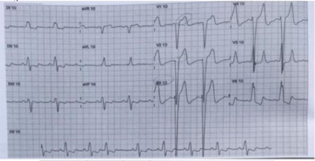
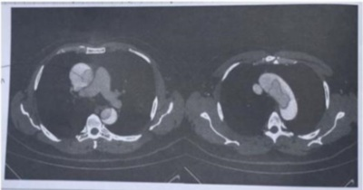
A Trombólise
B Troponina seriada.
C Cirurgia
D Anticoagulação
Questão 16 · Exames complementares · 4000105624Homem de 58 anos apresentou dor súbita e intensa em face anterior do tórax irradiada para o pescoço com início há 2 horas e com pouca melhora 1 hora após uso de analgésico oral. Foi submetido a cineangiocoronariogra a para estrati cação de doença arterial coronariana aterosclerótica no dia anterior. Refere ser tabagista e hipertenso de longa data e nega outras comorbidades. A radiogra a de tórax e o eletrocardiograma feitos na sala de emergência do hospital são demonstrados nas figura abaixo. A pressão arterial é de 160 x 110 mmHg, e a frequência cardíaca de 98 bpm. Qual a conduta mais adequada?
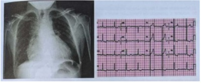
A Angiotomografia de aorta.
B Fibrinolítico endovenoso.
C Cateterismo cardíaco.
D Ecocardiograma transtorácico.
Questão 17 · Def inição e classif icação · 4000090112Na dissecção de aorta, a classificação de Stanfort B refere-se a:
A aorta ascendente.
B arco aórtico.
C aorta ascendente e descendente.
D aorta descendente.
Questão 18 · Tratamento da dissecção aórtica tipo B · 4000081093Paciente apresentando diagnóstico de Dissecção de Aorta tipo B de Stanford.Conduta:
A tratamento clínico quando não há evidência de complicação
B toracotomia de urgência
C laparotomia de urgência
D toraco freno laparotomia
Questão 19 · Tratamento da dissecção aórtica tipo A · 4000108715Homem, 49 anos, é admitido em hospital terciário com quadro de dor torácica em região retroesternal de forte intensidade, com irradiação para o dorso, acompanhada de sudorese intensa, há cerca de 3 horas. Inicialmente, foi atendido em uma unidade básica, tendo recebido aspirina e nitrato sublingual, sem melhora do quadro. É tabagista e hipertenso de longa data e faz uso irregular das seguintes medicações: enalapril, anlodipina e clortalidona. O exame físico da admissão revela o paciente ansioso, sudoreico, com PA = 80 x 40 mmHg, pulsos periféricos regulares e nos. A ausculta cardíaca mostra ritmo cardíaco regular em 2 tempos com bulhas hipofonéticas e sopro diastólico aórtico. A ausculta pulmonar está limpa. Após expansão volêmica e estabilidade momentânea da pressão arterial, foram realizados exames complementares (eletrocardiograma e tomogra a de tórax) que estão ilustrados a seguir. Assinale a alternativa que apresenta a conduta correta a seguir.
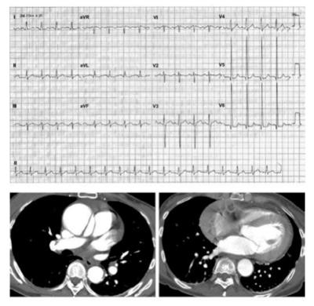
A Cateterismo cardíaco seguido de angioplastia coronária primária.
B Pericardiocentese.
C Trombólise sistêmica com alteplase e enoxaparina.
D Cirurgia de emergência.
E Anticoagulação plena com heparina não fracionada.
Questão 20 · Síndromes aórticas agudas · 4000104884Homem 82 anos, tabagista desde os 25 anos, diabético tipo II e hipertenso com uso irregular de captopril. Há 24 horas apresentou dor aguda de forte intensidade e progressiva em região torácica posterior, Nega dor semelhante prévia. Nega claudicação intermitente. Ao exame físico: consciente e orientado, pressão arterial de 200 x110 mmHg, frequência cardíaca de 77 bpm, pulsos palpáveis e simétricos em membros superiores, e em membros inferiores os pulsos distais estavam diminuídos, porém simétricos. O eletrocardiograma da admissão era sugestivo de sobrecarga ventricular esquerda. Foi internado, iniciada analgesia e otimizada a terapia anti-hipertensiva. A dor torácica persistia após 48 horas, com pressão arterial de 140x80 mmHg e frequência cardíaca de 55 bpm. A figura abaixo mostra a radiogra a de tórax e parte da tomografia. Qual o diagnóstico provável e a melhor conduta?
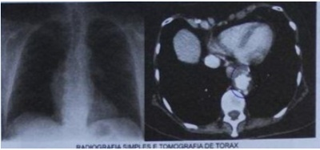
A Úlcera penetrante de aorta; Tratamento cirúrgico aberto
B Úlcera penetrante de aorta; Tratamento endovascular
C Dissecção de aorta; Tratamento cirúrgico aberto
D Dissecção de aorta; Tratamento endovascular
Questão 21 · Manif estações clínicas e complicações · 4000099022Um paciente do sexo masculino e de 61 anos de idade foi atendido na emergência com dor precordial de forte intensidade, irradiada para o dorso, sudorese fria e palidez cutânea. Os pulsos periféricos eram palpáveis exceto os do membro inferior direito. A pressão arterial era de 190 x 110 mmHg. A ausculta revelou um sopro diastólico suave em foco aórtico acessório. A radiografia de tórax foi inconclusiva. A hipótese diagnóstica é:
A Infarto agudo do miocárdio.
B Dissecção aguda da aorta.
C Embolia arterial periférica.
D Infarto pulmonar.
Questão 22 · Def inição e classif icação · 4000052093Com relação a dissecção aórtica é INCORRETO afirmar que:
A frequentemente é associada à hipertensão arterial
B a dissecção aórtica tipo A de Stanford é uma emergência cirúrgica
C a insuficiência aórtica pode estar associada a dissecção aórtica
D a dissecção aórtica tipo B de Stanford é aquela que se localiza na aorta ascendente
Questão 23 · Tratamento · 4000041315Paciente de 70 anos, hipertenso de longa data, em tratamento irregular, dá entrada no PS com dor aguda de forte intensidade em região anterior do tórax irradiando para região dorsal acompanhado de dispneia. Relata que a dor iniciou já de forte intensidade, ao exame PA 177 X 90 mmHg ,FC 102 BPM e ECG mostrou com padrão de sobrecarga das câmaras esquerdas. A conduta inicial a ser tomada é:
A iniciar bloqueador de canais de cálcio SL para reduzir a PA.
B após ECG ,fazer TC de Tórax para descartar tamponamento cardíaco.
C diurético tiazídico +betabloqueador.
D trombolítico se tiver menos de 12 h de dor.
E nitroprussiato de sódio + Metoprolol.
Questão 24 · Tratamento da dissecção aórtica tipo B · Cardiologia · 4000038825Trata-se do melhor tratamento para um paciente com dissecção de aorta torácica descendente não complicada. Assinale a alternativa correta.
A Procedimento de tronco com reparação em estágios.
B Substituição da aorta envolvida por enxerto.
C Cateterização com colocação de stent aórtico.
D Monitoramento do paciente sem procedimento cirúrgico, a princípio.
E Internação em UTI com anti-hipertensivos e hidratação vigorosa.
Questão 25 · Dissecção aórtica aguda · 4000021396Homem de 55 anos dá entrada no pronto-socorro com queixa de forte dor no peito, há 30 minutos, associada a mal-estar, sudorese e confusão mental. Ao exame sico, observam-se ritmo cardíaco regular, FC 65 bpm, PA 200x140mmHg no membro superior direito e PA 140x90mmHg no membro superior esquerdo, além de sopro sistólico em carótida direita. O diagnóstico mais provável é:
A acidente vascular cerebral isquêmico.
B síndrome coronariana aguda.
C urgência hipertensiva.
D dissecção de aorta.
Questão 26 · Exames de imagem · Cardiologia · 4000119466Homem de 65 anos, refere forte dor nas costas, lipotimia e falta de ar há 6 horas. Nega traumas locais. AP: ex-tabagista, parou há 1 ano. EF: PA = 190 x 120 mmHg, descorado 3+/4. CK-MB e eletrólitos: normais. ECG: normal. AngioTC: imagem a seguir. (Conforme imagem do caderno de questões) O diagnóstico é
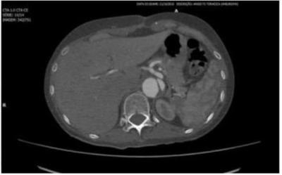
A listese de 8a vértebra torácica.
B rotura de aorta abdominal.
C rotura de aneurisma da aorta ascendente.
D dissecção de aorta abdominal.
Questão 27 · Tratamento · Dissecção aórtica aguda · 4000103237Paciente com queixa de intensa dor torácica, rasgada e localizada em dorso, seu ECG não demonstra alterações. Foi medicado com opioide e ainda assim apresenta dor. Após suspeita de dissecção de aorta, foi realizado tomografia de tórax, o que confirmou o diagnóstico. A respeito desse quadro, marque a opção considerada INADEQUADA:
A A progressão da dissecção está relacionada ao valor de PA e à velocidade de ejeção ventricular.
B A PAS alvo (120 mmHg) deve ser alcançada em 20 minutos.
C Sempre considerar dissecção aguda de aorta em pacientes com dor precordial e elevação da PA.
D O uso isolado definitroprussiato é ideal, pois promove aumento da FC e da velocidade de ejeção aórtica.
Questão 28 · Tratamento da dissecção aórtica tipo A · Classif icação e f isiopatologia · Dissecção aórtica aguda · 4000098460Homem, 45a, refere dor precordial de início súbito, de forte intensidade e com irradiação para as costas, há 2 horas. Antecedente pessoal: hipertensão arterial sistêmica, em uso irregular de enalapril 10 mg/dia. Exame físico: regular estado geral, pálido, PA = 184 x 114 mmHg; FC = 100 bpm; pulmões: murmúrio vesicular sem ruídos adventícios; coração: bulhas rítmicas normofonéticas sem sopros. Pulso femoral esquerdo diminuído. Eletrocardiograma: sobrecarga de ventrículo esquerdo. Tomografia de tórax. A conduta é:
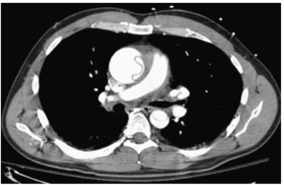
A Cirurgia de emergência.
B Punção de Marfan.
C Tratamento conservador.
D Cateterismo cardíaco.
Questão 29 · Dissecção aórtica aguda · 4000093023Todas as assertivas abaixo relativas à dissecção aguda de aorta estão corretas, EXCETO uma. Assinale-a:
A Homens são mais frequentemente afetados do que mulheres.
B Em geral, os pacientes apresentam hipotensão.
C Dor torácica é o sintoma mais comum.
D Deficit de pulso é mais comum em dissecções proximais do que em distais.
E Alguns pacientes podem apresentar elevação dos níveis de troponina ou alterações isquêmicas ao eletrocardiograma de repouso.
Questão 30 · Tratamento · Exames de imagem · 4000087923Sobre a dissecção aórtica pode-se afirmar que:
A Todos os casos de dissecção aórtica tipo B devem ser considerados para cirurgia de urgência.
B O nitroprussiato de sódio deve ser evitado devido ao risco de hipotensão severa.
C Os betabloqueadores devem ser utilizados em doses moderadas, já que doses altas podem onerar o risco operatório pela depressão da função ventricular.
D O ecocardiograma transtorácico é de grande importância e é muito mais sensível e específico nas dissecções de aorta descendente.
E O tratamento inicial da dissecção aórtica tipo A pode ser clínico e de acompanhamento, levando-se em conta o controle de níveis tensionais de pressão arterial e da dor.
Questão 31 · Dissecção aórtica aguda · Síndromes aórticas agudas · 4000086036NÃO É considerado fator de risco para o desenvolvimento de aneurisma de aorta abdominal:
A Hipercolesterolemia.
B Tabagismo.
C Hipertensão arterial.
D Diabetes mellitus.
Questão 32 · Manif estações clínicas e complicações · 4000085342Homem, 78 anos, hipertenso e tabagista, apresenta síncope, precedida de dor torácica de forte intensidade com irradiação anteroposterior. Encontra-se ansioso, com fácies de dor; sudoreico; Frequência Cardíaca (FC) = 110 bpm; Pressão Arterial (PA) = 160 x 100 mmHg no membro superior direito e 90 x 60 mmHg no esquerdo e Frequência Respiratória (FR) = 20 irpm. Ritmo cardíaco é regular e sem sopros. O diagnóstico mais provável é:
A Infarto agudo do miocárdio.
B Dissecção aórtica.
C Tromboembolismo pulmonar.
D Pneumotórax espontâneo.
Questão 33 · Dissecção aórtica aguda · Cardiologia · 4000048606Homem de 64 anos, diabético, tabagista e hipertenso, admitido na emergência com quadro de precordialgia de forte intensidade com irradiação para dorso acompanhado de sudorese, tontura e vômitos. A dor iniciou há 50 minutos. Ao exame: agitação psicomotora, PA 180X90, PA no braço direito: 120x80; FC: 110, ECG: supradesnivelamento em DII, DII e AVF, assinale a alternativa CORRETA:
A Administrados após IAM, os inibidores de enzima conversora da angiotensina (IECA) conferem redução de mortalidade apenas nos pacientes com disfunção do ventrículo esquerdo.
B Em pacientes com taquicardia ventricular (T V) na fase aguda do IAM a lidocaína profilática deve ser utilizada de rotina
C O uso definitratos no curto e em longo prazo no IAM mostrou benefício na diminuição da mortalidade.
D A pericardite pós- IAM precoce deve ser tratada com corticoide afim de evitar aneurisma de ventrículo esquerdo.
E Em pacientes com comprometimento significativo da função ventricular esquerda ou com alterações da condução AV, os antagonistas dos canais de cálcio devem ser evitados.
Questão 34 · Tratamento · 4000043520Paciente hipertenso mal controlado de 60 anos de idade procura o hospital com intensa dor torácica com característica descrita de ser "rasgada", sendo bastante intensa. Existe diferença de pressão entre os membros superiores, sendo a maior de 210 x 120 mmHg. Como ECG estava inespecí co, foi realizada tomogra a torácica que demonstrou Dissecção de Aorta. Para esse tratamento clínico, assinale a alternativa considerada como INADEQUADA.
A Idealmente, a pressão sistólica alvo de 120 mmHg deve ser alcançada em 20 minutos.
B Potencialmente, o uso isolado do nitroprussiato de sódio pode piorar a dissecção da aorta.
C O uso isolado de Nitroprussiato pode promover aumento da Frequência Cardíaca.
D Nitroprussiato não deve ser associado ao beta bloqueador.
Revisar: possível letra faltando em enunciado
Questão 35 · Tratamento · 4000043417Idoso hipertenso mal controlado e diabético evolui com dor torácica atípica de início súbito nesta manhã. Seu ECG não mostra alteração, contudo radiogra a torácica demonstrava alargamento mediastinal, o que levou à realização de tomografia de tórax, obtendo, como diagnóstico, Dissecção de Aorta. Nesse caso, podemos AFIRMAR que:
A Potencialmente, o uso isolado definitroprussiato de sódio pode piorar a dissecção
B Não existe necessidade de terapia combinada para controle da Pressão Arterial, podendo utilizar nitrato isoladamente.
C Ocorre benefício do uso associado de beta bloqueador.
D Somente existe benefício na redução da PA caso esta exceda o nível de 180 x 110 mmHg
Questão 36 · Tratamento · 4000018613A respeito da dissecção aguda da aorta, afecção cardiovascular frequentemente associada à hipertensão arterial sistêmica, julgue o item subsequente. No caso de pacientes jovens com dissecção aguda da aorta deve-se iniciar o tratamento clínico com a redução imediata da pressão arterial sistólica para valores não inferiores a 150 mmHg, por meio de agentes redutores da pós-carga de trabalho do coração, associada à administração de fármacos de efeito inotrópico positivo. Essas ações farmacológicas combinadas reduzem a tensão de cisalhamento aórtico e, por conseguinte, ajudam na proteção vascular contra a ruptura aórtica.
A Certo.
B Errado.
Questão 37 · Manif estações clínicas e complicações · 4000018610A respeito da dissecção aguda da aorta, afecção cardiovascular frequentemente associada à hipertensão arterial sistêmica, julgue o item subsequente. As complicações clínicas associadas a essa moléstia aórtica incluem infarto do miocárdio, isquemia dos membros inferiores, acidente vascular cerebral, paraplegia, insu ciência renal aguda, infarto mesentérico, insu ciência aórtica, hemotórax e tamponamento cardíaco.
A Certo.
B Errado.
Questão 38 · Epidemiologia · Def inição e classif icação · 4000122009Um homem de 55 anos apresenta dor torácica súbita, irradiada para membro superior esquerdo, que, após alguns minutos, migra para região abdominal e membro inferior esquerdo. No momento, está em regular estado geral, orientado, com fácies de dor. P: 120 bpm; pressão arterial no membro superior direito: 220 × 110 mmHg. Não tem pulso femoral à esquerda, tendo sinais de isquemia aguda na perna do mesmo lado. Sobre dissecções agudas de aorta, é INCORRETO:
A Diferentemente do que ocorre nas dissecções do tipo A, a hipertensão arterial é um dos principais fatores de risco presentes nas dissecções do tipo B.
B O caráter migratório da dor está presente em menos de 20% dos casos, sendo a dortorácica irradiada para as costas a queixa mais comum nas dissecções do tipo B.
C O tratamento inicial é o controle da dor, da pressão arterial e da frequência cardíaca,que deve ser feito com vasodilatadores e betabloqueadores cardiosseletivos.
D A angiotomografia, no paciente estável hemodinamicamente, fornece dadossuficientes para o diagnóstico e o planejamento cirúrgico, quando necessário.
E A isquemia do membro deve ser tratada com embolectomia, pois se trata de obstruçãoarterial aguda de causa embólica, cuja provável fonte é o coração.
Questão 39 · Tratamento da dissecção aórtica tipo A · 4000107717Paciente, 57 anos, hipertenso, obeso, tabagista e sedentário. É admitido na unidade de terapia intensiva com história de dor torácica, sudorese, taquicardia e hipotensão arterial há 30 minutos. O eletrocardiograma revelou bloqueio de ramo esquerdo de grau avançado com supra de segmento ST de 1 mm de V1 a V6 e a radiogra a de tórax mostrou provável alargamento de mediastino superior. Realizou a tomografia computadorizada de tórax. Após medidas iniciais de atendimento, a conduta subsequente é:
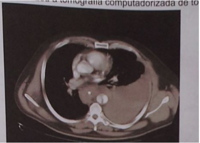
A Cirurgia de urgência.
B Trombólise química.
C Toracocentese.
D Angioplastia primária de coronária.
Questão 40 · Tratamento da dissecção aórtica tipo A · 4000106701Paciente feminina de 40 anos, com exame físico compatível com síndrome de Marfan, é admitida ao hospital com diagnóstico de dissecção aguda da aorta proximal. Exame físico: PA = 180 x 100 mmHg; FC = 110 bpm; eupneica; presença de sopro diastólico 3+/6+ em foco aórtico. Assinale a conduta mais adequada:
A Metoprolol IV, nitroprussiato de sódio, cirurgia de emergência.
B Metoprolol IV, nitroprussiato de sódio, cirurgia em 48h, após estabilização clínica.
C Metoprolol IV, nitroprussiato de sódio e transição para tratamento conservador com betabloqueador e IECA via oral.
D Diazóxido, hidralazina, metoprolol IV, cirurgia de emergência.
E Verapamil IV, nitroprussiato de sódio, cirurgia de emergência.
Questão 41 · Tratamento · Dissecção aórtica aguda · 4000086524Homem, 59 anos, obeso, com HAS de longa data, em tratamento irregular, chega à emergência com dor torácica intensa, com irradiação para o dorso. PA = 230 x 140 mmHg; FC = 112 bpm; hiperfonese de B2 em área aórtica. ECG em repouso demonstra hipertro a de VE. Troponina I: 0,1 ng/dl. A hipótese diagnóstica mais provável é a de _______________________eaconduta medicamentosa IV de imediato é usar ________________.
A Hipertensão acelerada – nitroglicerina.
B Síndrome coronariana aguda – nitroglicerina.
C Aneurisma dissecante de aorta – metoprolol.
D Infarto agudo do miocárdio – metoprolol.
E Pericardite – cetoprofeno.
Questão 42 · Manif estações clínicas e complicações · 4000079813Paciente do sexo masculino, 59 anos, é trazido ao pronto-socorro por apresentar dor súbita e lancinante inicialmente em região torácica anterior com irradiação para dorso, evoluindo em poucas horas para região abdominal. Considerando que o mesmo é tabagista 1maço/dia há 20 anos, hipertenso há 15 anos e as características da dor, qual diagnóstico seria o mais provável?
A Pneumotórax hipertensivo.
B Trombose mesentérica .
C Aneurisma dissecante de aorta.
D Refluxo gastroesofágico.
E Gastrite medicamentosa.
Questão 43 · Exames complementares · 4000070819Paciente masculino, de 67 anos de idade, portador de Hipertensão Arterial Sistêmica (HAS) e doença articular degenerativa, queixa-se de dor torácica, em região posterior e interescapular, acompanhada de sudorese, dispneia, hipotensão e rouquidão. Ao exame físico, chama atenção a presença de sopro diastólico irradiado para a borda esternal direita. O paciente evoluiu com episódio de síncope. O ECG mostra Alterações de Repolarização Ventricular (ARV) inespecí cas e ausência de sinais de isquemia aguda. A principal hipótese diagnóstica e os exames complementares mais adequados para confirmá-la, são:
A Dissecção aórtica / ecocardiograma, TC e RM de tórax.
B Dissecção aórtica / RX de tórax e cintilografia pulmonar.
C IAM anterosseptal / curva enzimática e RM de tórax
D Embolia pulmonar / gasometria arterial e espirometria.
Revisar: possível letra faltando em enunciado
Questão 44 · Tratamento · 4000069167Paciente com Dissecção Aórtica do tipo III de DeBakey, evoluiu com PA= 200X120mmHg, e apresentou dor contínua e expansão do diâmetro da aorta avaliada pela tomogra a computadorizada. A conduta para o tratamento da doença aórtica é:
A Repouso e controle da pressão arterial nas próximas 24h usando hidralazina e enalapril
B Iniciar betabloqueador intravenoso
C Estabilização clínica com nitroprussiato de sódio e morfina
D Correção cirúrgica imediata
Questão 45 · Manif estações clínicas e complicações · 4000057013Todas as afirmativas a seguir sobre as manifestações clínicas da dissecção aórtica estão corretas, EXCETO:
A Os homens são mais frequentemente afetados do que as mulheres.
B A dor torácica é o sintoma mais comum.
C Pacientes com dissecção aórtica frequentemente apresentam hipotensão.
D A regurgitação aórtica é mais comum na dissecção do tipo A do que na tipo B (Sanford).
E Os déficits do pulso são mais comuns na dissecção proximal do que na distal.
Questão 46 · Tratamento da dissecção aórtica tipo A · 4000052647Em relação à dissecção aórtica, o tratamento cirúrgico está indicado para os pacientes:
A Tipo II de DeBakey, crônica, com aneurisma de 4,5 cm.
B Tipo B de Stanford, aguda, sem dor.
C Tipo A de Stanford, aguda, com insuficiência aórtica.
D Tipo B de Stanford, crônica, com aneurisma de 5,5 cm.
E Tipo A de Stanford, crônica, sem dilatação.
Questão 47 · Dissecção aórtica aguda · 4000028405Homem de 74 anos, hipertenso e tabagista foi admitido por dor torácica retroesternal de forte intensidade, em pressão, há 1 hora. Ao exame clínico: pulso de 100 bpm, frequência respiratória 20 irpm, pressão arterial 180x100 mmHg em membro superior direito, pulsos assimétricos, bulhas cardíacas normofonéticas com sopro diastólico em foco aórtico 3+/6+. Eletrocardiograma mostrou infarto agudo do miocárdio com supradesnivelamento do segmento ST de parede inferior. Qual a conduta farmacológica necessária ao paciente neste momento na sala de emergência?
A Betabloqueador endovenoso.
B Trombólise.
C Anticoagulação.
D Antiagregação plaquetária.
Questão 48 · Tratamento da dissecção aórtica tipo A · Epidemiologia · Manif estações clínicas e complicações · 4000025398Sobre as dissecções da aorta podemos afirmar que:
A As dissecções tipo A de Stanford não complicadas devem ser tratadas clinicamente.
B O RX de tórax pode se apresentar normal em até 40% dos pacientes.
C A dislipidemia e o tabagismo apresentam-se como os principais fatores de risco.
D As dissecções de aorta tipo B de Stanford geralmente envolvem a aorta ascendente.
E A localização interescapular sugere acometimento de aorta descendente em cerca de 90% dos casos.
Questão 49 · Tratamento · 4000022482Paciente deu entrada no hospital com intensa dor torácica que irradiava para dorso. Seu Eletrocardiograma demonstrava alteração de repolarização, estando o paciente hipertenso com PA de 200x120 mm Hg. Foi iniciado Nitroglicerina, Atenolol VO e Captopril SL, mas como a dor não melhorava e a Radiogra a Torácica demonstrava uma imagem mediastinal que não era siológica, foi solicitada tomogra a torácica que diagnosticou uma dissecção aórtica. Então, é iniciado Nitroprussiato EV além de Metoprolol EV. Qual das medicações abaixo utilizadas apresenta interação tóxica com o metabolismo oxidativo?
A Captopril.
B Metoprolol.
C Nitroprussiato de Sódio.
D Nitroglicerina.
Questão 50 · Tratamento · 4000006291Um paciente de 62 anos de idade é atendido na unidade de emergência com história de dor lancinante, extremamente súbita em região precordial, irradiada ao dorso. Ao chegar, estava pálido, taquicárdico, pressão arterial de 180 x 110 mmHg; com sopro de regurgitação no foco aórtico e estertores subcrepitantes em base pulmonares. Pulsos periféricos diminuídos em MMIIS. Em relação ao caso, NÃO devemos introduzir imediatamente:
A Nitroprussiato de sódio.
B Derivados da morfina.
C Betabloqueadores.
D Nitratos.
E Bloqueadores da enzima conversora.
Questão 51 · Tratamento da dissecção aórtica tipo B · Dissecção aórtica aguda · 4000124720Com relação à dissecção aórtica aguda distal ou do tipo B não complicada, assinale a alternativa correta.
A A cirurgia deve ser realizada imediatamente.
B O tratamento clínico para os pacientes estáveis não complicados deve ser utilizado já que a sobrevida em 30 dias é 92%.
C A hipertensão arterial é rara.
D Betabloqueador deve ser evitado.
E Outras drogas inotrópicas negativas (verapamil por exemplo) estão contraindicadas.
Questão 52 · Tratamento da dissecção aórtica tipo A · 4000106760Homem, 37 anos, admitido no pronto atendimento de hospital terciário com dor retroesternal em opressão de forte intensidade há 3 horas. Recebeu aspirina, nitrato sublingual e propranolol em unidade básica de saúde. Nega outros sintomas. Hipertenso em uso de enalapril e tabagista ativo. Exame físico: ritmo cardíaco regular em dois tempos; bulhas hipofonéticas; sem sopros; PA: 80 x 30 mmHg; FC: 75 bpm; pulsos periféricos regulares; nos e simétricos; tempo de enchimento capilar de 6 segundos; murmúrio vesicular simétrico sem ruídos adventícios. Foi iniciada expansão volêmica com soro siológico. Qual é a conduta mais adequada?
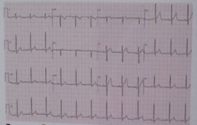
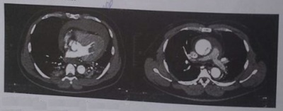
A Angioplastia primária.
B Cirurgia.
C Alteplase.
D Pericardiocentese.
Questão 53 · Exames de imagem · 4000089796Paciente do sexo feminino, 60 anos de idade, é atendida na emergência com queixa de dor subesternal de início súbito, com irradiação para pescoço e região dorsal persistente há cerca de 45 minutos. Hipertensa de longa data, tabagista (10 cigarros/dia), sem antecedentes de IAM ou insu ciência cardíaca. Ao exame, encontrava-se ansiosa, sudoreica. À ausculta cardíaca, ritmo regular em 2 tempos, presença de B4, PA: 150 x 100 mmHg, frequência de 94 bpm. O eletrocardiograma mostrava hipertro a ventricular esquerda com alteração difusa de repolarização. A radiogra a de tórax mostrava cardiomegalia e alargamento do mediastino. Qual a conduta inicial mais apropriada neste caso?
A Iniciar trombolítico;
B Iniciar heparina endovenosa;
C Aguardar resultado de enzimas;
D Solicitar ecocardiograma transesofágico;
E Solicitar angiografia coronariana de urgência.
Questão 54 · Manif estações clínicas e complicações · 4000073837Qual o diagnóstico mais provável de um paciente com dor torácica súbita e sopro cardíaco diastólico paraesternal direito iniciados há alguns minutos, que desenvolve edema agudo de pulmão?
A IAM com ruptura de septo interventricular
B Dissecção aórtica com insuficiência aórtica
C IAM com insuficiência mitral
D Embolia pulmonar gordurosa
E Tromboembolismo pulmonar
Questão 55 · Def inição e classif icação · Exames de imagem · 4000065723Paciente com dor torácica aguda e intensa realiza tomogra a computadorizada do tórax que demonstra aorta com descolamento da íntima, apresentando luz verdadeira e luz falsa, o que configura o diagnóstico de:
A coarctação de aorta.
B aneurisma roto.
C dissecção aórtica.
D dilatação aneurismática sacular.
E aneurisma parcialmente trombosado.
Questão 56 · Tratamento · 4000114133Homem, 72 anos de idade, com antecedente de hipertensão arterial em tratamento irregular desde os 40 anos de idade, procura o pronto-socorro por dor torácica de forte intensidade (10 em 10), de início súbito há meia hora, irradiada para dorso, sem náuseas ou vômitos e um episódio de síncope com duração menor do que 1 minuto no caminho até o hospital. Exame clínico inicial: mau estado geral; palidez cutânea; sudoreico; fácies de dor; ansioso; Glasgow: 15; glicemia capilar: 190 mg/dl; pressão arterial em membro superior direito: 220 x 120 mmHg e em membro superior esquerdo: 180 x 90 mmHg; FC: 120 bpm; FR: 28 irpm; SatO₂ em ar ambiente: 95%. Restante do exame normal. Paciente foi levado imediatamente à sala de emergência. A conduta terapêutica medicamentosa para o quadro agudo é:
A AAS e clopidogrel.
B Diazepam e orientações quanto a ansiedade.
C Furosemida e morfina.
D Anticoagulação e oxigenoterapia.
E Nitroprussiato de sódio e metoprolol.
Questão 57 · Exames de imagem · 4000114115Homem, 72 anos de idade, com antecedente de hipertensão arterial de tratamento irregular desde os 40 anos de idade, procura o pronto-socorro por dor torácica de forte intensidade (10 em 10), de início súbito há meia hora, irradiada para dorso, sem náuseas ou vômitos e um episódio de síncope com duração menor do que 1 minuto no caminho até o hospital. Exame clínico inicial: mau estado geral; palidez cutânea; sudoreico; fácies de dor; ansioso; Glasgow: 15; glicemia capilar: 190 mg/dl; pressão arterial membro superior direito: 220 × 120 mmHg e membro superior esquerdo: 180 × 90 mmHg; FC: 120 bpm; FR: 28 ipm; Sat O₂ em ar ambiente: 95%. Restante do exame normal. Paciente foi levado imediatamente à sala de emergência. Foram realizados radiografia de tórax (RX) no leito e eletrocardiograma (ECG). As descrições destes exames mais condizentes com o quadro clínico deste paciente são:
A RX normal e ECG com supradesnivelamento do segmento ST em DII, DIII e aVF.
B RX com alargamento de mediastino e ECG com índice de Sokolow-Lion maior que 35 mm.
C RX com sinais de congestão pulmonar e ECG com área inativa em DII, DIII e aVF.
D RX normal e ECG com infradesnivelamento do ST.
E RX com infarto pulmonar e ECG com S1Q3T3.
Questão 58 · Tratamento da dissecção aórtica tipo A · 4000091792Paciente masculino de 66 anos, hipertenso de longa data e com controle inadequado da pressão, chega à emergência com queixa de dor torácica intensa irradiada para região dorsal. A pressão arterial inicial era de 205/120 mmHg, e a frequência cardíaca de 98 bpm. ECG de repouso e marcadores de necrose excluíam síndrome coronariana aguda. Havia suspeita clínica de dissecção aórtica aguda, pois estudo radiológico revela aumento do mediastino. Tal diagnóstico foi confirmado por ecocardiografia. Analise as considerações abaixo: I. Não havendo contraindicações, betabloqueadores tipo esmolol ou labetalol EV são drogas de escolha inicialmente usados para controle pressórico. II. Pacientes com dissecção proximal tipo A são candidatos a tratamento cirúrgico. III. Pacientes com síndrome de Marfan, gestantes e presença de valva aórtica bicúspide apresentam maior risco de dissecção. Qual (is) assertiva (s) está (ão) CORRETA (S):
A Somente a assertiva I.
B Somente as assertivas I e II.
C Somente as assertivas I e III.
D Somente a assertiva II.
E Todas as assertivas.
Questão 59 · Dissecção aórtica aguda · 4000086988Você está no PS quando adentra um paciente do sexo masculino, com 65 anos, referindo intensa dor precordial lancinante irradiada para região dorsal há mais de 60 min, palidez cutânea, sudorese fria e pegajosa, pulsos nos, pressão arterial 130 x 90mmHg, pulso 100bpm; ECG inespecí co. Você nota tratar-se de um homem alto, magro com envergadura desproporcional (aumentada). Diante disso você crer tratar-se de:
A Infarto agudo do miocárdio e faz nitrato sublingual, antiagregação plaquetária dupla, betabloqueador IV.
B Dissecção aórtica, e faria betabloqueador IV + nitroprussiato de sódio IV.
C Angina Instável, e faria nitrato sublingual, betabloqueador IV, antiagregação dupla.
D Miocardite aguda, faria corticoide venoso.
E Infarto agudo do miocárdio, encaminharia para angioplastia coronária percutânea.
Revisar: possível letra faltando em enunciado
Questão 60 · Exames de imagem · 4000011882Paciente do sexo masculino, 70 anos, hipertenso e portador de dislipidemia, vem se queixando de forte dor retroesternal com irradiação para o dorso. Pressão arterial medida de 180/120 mmHg. Observa-se assimetria de pulso braquial. O ECG é normal e a radiogra a de tórax está abaixo (VER IMAGEM). Qual o exame mais indicado para confirmação diagnóstica, dentre as opções abaixo?
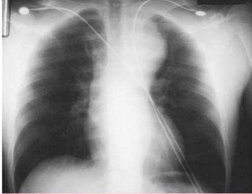
A Cintilografia do miocárdio.
B Ecocardiograma transtorácico.
C Cateterismo cardíaco com aortografia.
D Tomografia computadorizada do tórax.
Questão 61 · Dissecção aórtica aguda · Dissecção aórtica aguda · Cardiologia · 4000001320Escolha a melhor droga ou combinação de drogas indicada no controle da hipertensão em vigência da dissecção de aorta: Respostas: 1 12 23 34 45 56
A Furosemida + betabloqueador.
B Nitropussiato de sódio + betabloqueador.
C Nitropussiato de sódio isoladamente.
D Betabloqueador isoladamente.
E Nitropussiato de sódio + nifedipina.